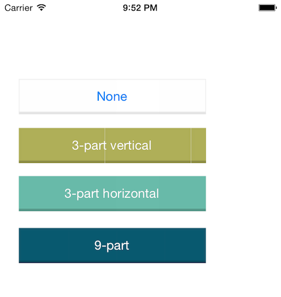
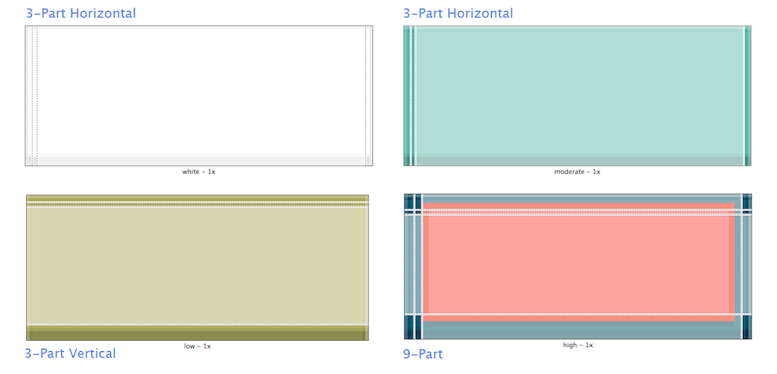
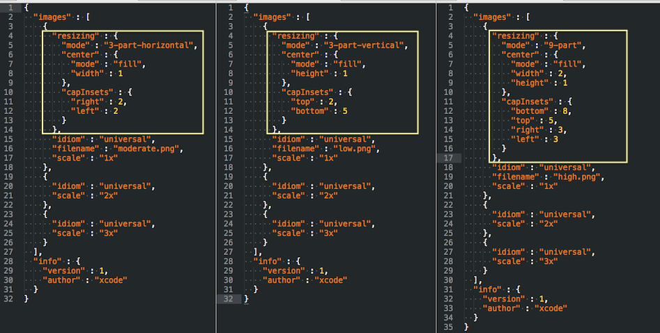
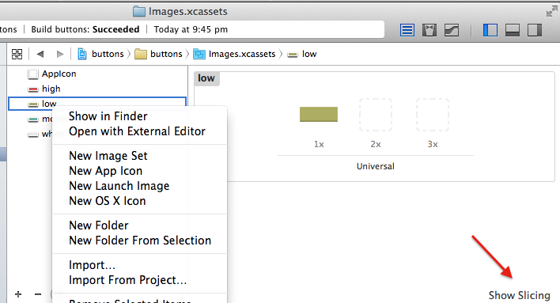
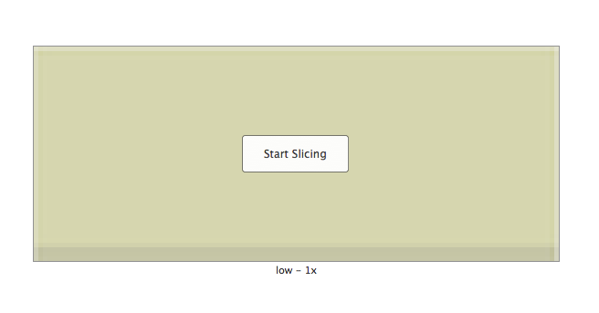
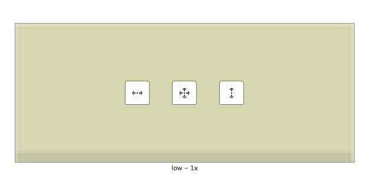

Image Slicing (Repeatable image) with Xcode Asset Catalog
Image slicing option in xcode asset catalog allows you to define resiziable area an image so it can be repeated to fit the object's height & width.
The same can be achieved with resizableImageWithCapInsets:UIEdgeInsetsMake but I always messup the arguments and usually we have to try a random number by measure the edges with image editor (eg., preview)
[[UIImage imageNamed:@"image.png"]
resizableImageWithCapInsets:UIEdgeInsetsMake(bottom, top, left, right)];
Why
Deleted code is debugged code
- One less line to maintain/debug
- No need to create an IBOutlet to set image
- You can refer the image in IB and preview right away.
- For all states (in case of a button)
What is the Catch?
- I don't know how to reset (inset) from xcode asset catalog itself.
- Editing in UI again if you change the image is little cumbersome at times. (usually when you try to switch between horizontal/vertical/both)
You can still manually fine tune the inset arguments in code if required. (Right click on an image Show in Finder edit resizing object in Contents.json refer the screenshot)
There are three ways you could resize the image to fit your need.
- Horizontal (3-part horizontal)
- Vertical (3-part vertical)
- Both (9-part)
For the first two options, it let you select non-repeatable left edge, resizable middle area, and non-repetable right edge.
Horizontal slicing is best option if you have the asset that fit the height of your button/host view. If your host view (button in our case) match the width of the asset then you can do the same with vertical slicing.
If you want to truly want to repeat the image to fit dynamic size (width x height) then 9-part is the best option.
output

Slicing

Behind the scene

Step by Step


